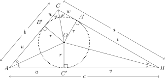
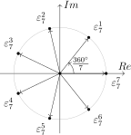
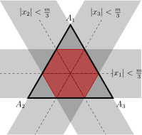

TikZ gyorstalpaló, példák
2. Példák
A példákban használt csomagok:
\usetikzlibrary {arrows, arrows.meta, backgrounds}
\usetikzlibrary {calc, intersections, patterns}
\usetikzlibrary {shapes, shapes.geometric, through}
2.1. Sakktábla
Szükséges csomag: \usepackage {skak}
\begin{tikzpicture}[scale=0.8]
\foreach \i in {1,3,5,7}
\foreach \j in {1,3,5,7} {
\fill[line width=0.pt, fill=gray,opacity=0.7]
(\i,\j) -- (\i+1,\j) -- (\i+1,\j+1) -- (\i,\j+1) -- cycle;
\fill[line width=0.pt, fill=gray,opacity=0.7] (\j,\i) --
(\j-1,\i) -- (\j-1,\i-1) -- (\j,\i-1) -- cycle;
}
\draw (0,0)--(0,8)--(8,8)--(8,0)--cycle;
\begin{Large}
\draw (0.5,0.5) node {\bf{\symrook}};
\draw (1.5,1.5) node {\bf{\symrook}};
\draw (2.5,2.5) node {\bf{\symrook}};
\draw (3.5,3.5) node {\bf{\symrook}};
\draw (4.5,7.5) node {\bf{\symbishop}};
\draw (5.5,7.5) node {\bf{\symbishop}};
\draw (6.5,4.5) node {\bf{\symbishop}};
\draw (7.5,6.5) node {\bf{\symbishop}};
\end{Large}
\end{tikzpicture}
2.2. Nyolcszög, lyukkal
\newcommand*\st{1.414142135}
\begin{tikzpicture}[scale=2, line cap=round]
\fill[gray, pattern = horizontal lines]
(-1,-1)--(0,-\st)--(1,-1)--(\st,0)--(1,1)--(0,\st)--(-1,1)--(-\st,0)--cycle;
\fill[white]
(-1,-1)--(0,-2+\st)--(1,-1)--(2-\st,0)--(1,1)--(0,2-\st)--(-1,1)--(-2+\st,0)--cycle;
\fill[gray, pattern = vertical lines]
(-1,-1)--(0,-2+\st)--(1,-1)--(2-\st,0)--(1,1)--(0,2-\st)--(-1,1)--(-2+\st,0)--cycle;
\fill[white]
(0,2-\st)--(2-\st,0)--(0,\st-2)--(\st-2,0)--cycle;
\draw[line width=2] (-1,-1)--(0,-\st)--(1,-1)--(\st,0)--(1,1)--(0,\st)--(-1,1)--(-\st,0)--cycle;
\draw[line width=2] (-1,-1)--(0,-2+\st)--(1,-1)--(2-\st,0)--(1,1)--(0,2-\st)--(-1,1)--(-2+\st,0)--cycle;
\draw[line width=1.5, dashed] (0,2-\st)--(2-\st,0)--(0,\st-2)--(\st-2,0)--cycle;
\draw[line width=1.5, dashed] (0,2-\st) -- (0,\st);
\draw[line width=1.5, dashed] (2-\st,0) -- (\st,0);
\draw[line width=1.5, dashed] (0,-2+\st) -- (0,-\st);
\draw[line width=1.5, dashed] (-2+\st,0) -- (-\st,0);
\end{tikzpicture}

2.3. Sok körzőzés
\begin{tikzpicture}[scale=0.8]
\foreach \i in {0,...,12} {
\draw (\i+0,0) circle (1);
\draw (\i+0.5,-0.866) arc (0:120:1);
\draw (\i+1.5,-0.866) arc (0:240:1);
\draw (\i+-1,-0) arc (60:-60:1);
\draw (\i+0,-1.732) arc (0:120:1);
\draw (\i+-1.5,-0.866) arc (-120:120:1);
\draw (\i+-1,-0) arc (-60:60:1);
\draw (\i+-1.5,0.866) arc (-120:0:1);
\draw (\i+0,1.732) arc (120:360:1);
\draw (\i+0.5,0.866) arc (0:-120:1);
\draw (\i+0.5,0.866) arc (-60:-180:1);
\draw (\i+0.5,0.866) arc (120:240:1);
\draw (\i+0.5,0.866) arc (180:300:1);
\draw (\i+0.5,-0.866) arc (180:60:1);
\draw (\i+-1,-1.732) arc (180:60:1);
\draw (\i+1.5,0.866) arc (120:240:1);
\draw (\i+0.5, 0.866) arc (0:60:1);
\draw (\i+0.5, 0.866) arc (240:180:1);
\draw (\i+0.5, 0.866) arc (240:300:1);
\draw (\i+0.5, 0.866) arc (120:60:1);
\draw (\i+0.5, 0.866) arc (180:120:1);
\draw (\i+0.5, 0.866) arc (300:360:1);
\draw (\i+-1,-0) arc (0:60:1);
\draw (\i+-1,-0) arc (240:180:1);
\draw (\i+-1,-0) arc (60:120:1);
\draw (\i+-1,-0) arc (300:240:1);
\draw (\i+-1,-0) arc (120:180:1);
\draw (\i+-1,-0) arc (360:300:1);
\draw (\i+0.5, -0.866) arc (180:240:1);
\draw (\i+0.5, -0.866) arc (60:0:1);
\draw (\i+0.5, -0.866) arc (120:60:1);
\draw (\i+0.5, -0.866) arc (240:300:1);
\draw (\i+0.5, -0.866) arc (120:180:1);
\draw (\i+0.5, -0.866) arc (360:300:1);
}
\end{tikzpicture}

2.4. Óxisz szigete
\begin{tikzpicture}[scale = 0.7]
\draw plot [smooth cycle, tension = 0.5] coordinates {(0,0) (5,-2)
(10,0) (12,5) (10,10) (5,12) (0,10) (-1,5)};
\draw plot [smooth, tension = 1] coordinates {(0,10) (1,8) (0,4) (1,2) (0,0)}; %K12
\draw plot [smooth, tension = 1] coordinates {(1,8) (2,8) (2,5) (0,4)}; %K13
\draw plot [smooth, tension = 1] coordinates {(2,8) (3,9) (6,10) (5,12)}; %K3
\draw plot [smooth, tension = 1] coordinates {(6,10) (8,10) (7,8) (9,7) (10,10)}; %K4
\draw plot [smooth, tension = 1] coordinates {(3,9) (4,7) (7,8)}; %K2
\draw plot [smooth, tension = 1] coordinates {(4,7) (3,5) (2,5)}; %K14
\draw plot [smooth, tension = 1] coordinates {(9,7) (8,4) (5,1) (3,5)}; %K1
\draw plot [smooth, tension = 1] coordinates {(5,1) (5,0) (1,2)}; %K11
\draw plot [smooth, tension = 1] coordinates {(5,0) (6,-1) (5,-2)}; %K10
\draw plot [smooth, tension = 1] coordinates {(6,-1) (8,0) (9,2) (10,4) (8,4)}; %K9
\draw plot [smooth, tension = 1] coordinates {(10,0) (10,1) (8,0)}; %K8
\draw plot [smooth, tension = 1] coordinates {(10,4) (10,7) (11,5) (12,5)}; %K5
\draw plot [smooth, tension = 1] coordinates {(11,5) (11,3) (9,2)}; %K6 és K7
\draw (0,8) node {$A$};
\draw (3,10.5) node {$B$};
\draw (1.3,6.3) node {$C$};
\draw (2.8,6.6) node {$D$};
\draw (5,8.5) node {$E$};
\draw (8.5,9) node {$F$};
\draw (5.5,5) node {$G$};
\draw (10.5,8) node {$H$};
\draw (10.5,4.5) node {$I$};
\draw (2,3.5) node {$J$};
\draw (3,-0.5) node {$K$};
\draw (7.5,1) node {$L$};
\draw (10.5,1.7) node {$M$};
\draw (9,0) node {$N$};
\end{tikzpicture}
2.5. Gráf öt csúccsal
\begin{tikzpicture}[scale=.5,minimum size=5mm,inner sep=0pt]
\foreach \name/\color/\theta in
{A/red/18,B/green/90,C/blue!80/162,D/yellow/234,E/orange/306}
\node[circle,draw,fill=\color] (\name) at (\theta:3) {};
\node[circle,draw,fill=gray] (O) at (0,0) {};
\foreach \name in {A,B,C,D,E}
\draw (O) -- (\name);
\foreach \i/\j in {A/B,B/C,D/E}
\draw (\i) -- (\j);
\draw (B) .. controls (-5,1) .. (D);
\end{tikzpicture}

2.6. Gráf sok csúccsal
\begin{tikzpicture}[scale=.48,minimum size=5mm,inner sep=0pt]
\foreach \name/\color/\theta in
{A/red/18,B/orange/90,C/blue!80/162,D/yellow/234,E/orange/306}
\node[circle,draw,fill=\color] (\name) at (\theta:3) {};
\node[circle,draw,fill=green] (O) at (0,0) {};
\node[above right] at (O) {$v$};
\node[right,xshift=8pt] at (A) {$v_3$};
\node[right,xshift=8pt] at (B) {$v_2$};
\node[left,,xshift=-8pt] at (C) {$v_1$};
\node[left,,xshift=-8pt] at (D) {$v_5$};
\node[right,xshift=8pt] at (E) {$v_4$};
\foreach \name in {A,B,C,D,E}
\draw (O) -- (\name);
\node[circle,draw,fill=red] (X1) at (126:5) {};
\node[circle,draw,fill=blue!80] (X2) at (90:7) {};
\node[circle,draw,fill=red] (X3) at (36:10) {};
\node[circle,draw,fill=blue!80] (X4) at (18:12) {};
\node[circle,draw,fill=red] (X5) at (0:10) {};
\node[circle,draw,fill=blue!80] (X6) at (-18:8) {};
\draw[thick,double distance=2pt] (C) -- (X1);
\draw[thick,double distance=2pt] (X1) -- (X2);
\draw[thick,double distance=2pt] (X2) -- (X3);
\draw[thick,double distance=2pt] (X3) -- (X4);
\draw[thick,double distance=2pt] (X4) -- (X5);
\draw[thick,double distance=2pt] (X5) -- (X6);
\draw[thick,double distance=2pt] (X6) -- (A);
\draw[thick,double distance=2pt] (A) -- (O) -- (C);
\node[circle,draw,fill=green] (Y1) at (80:5) {};
\node[circle,draw,fill=orange] (Y2) at (50:7) {};
\node[circle,draw,fill=green] (Y3A) at (20:8) {};
\node[circle,draw,fill=green] (Y3B) at (30:5) {};
\node[circle,draw,fill=orange] (Y4A) at (10:6) {};
\node[circle,draw,fill=yellow] (Y4B) at (10:8) {};
\node[circle,draw,fill=orange] (Y4C) at (15:10) {};
\node[circle,draw,fill=green] (Y5) at (-35:7) {};
\node[circle,draw,fill=yellow] (Y6A) at (-20:12) {};
\node[circle,draw,fill=orange] (Y6B) at (-20:4) {};
\draw[thick,dashed,double distance=2pt] (B) -- (O) -- (E);
\draw[thick,dashed,double distance=2pt] (B) -- (Y1);
\draw[thick,dashed,double distance=2pt] (Y1) -- (Y2);
\draw[thick,dashed,double distance=2pt] (Y2) -- (Y3A);
\draw[thick,dashed,double distance=2pt] (Y2) -- (Y3B);
\draw[thick,dashed,double distance=2pt] (Y3A) -- (Y4A);
\draw[thick,dashed,double distance=2pt] (Y3A) -- (Y4B);
\draw[thick,dashed,double distance=2pt] (Y3A) -- (Y4C);
\draw[thick,dashed,double distance=2pt] (E) -- (Y5);
\draw[thick,dashed,double distance=2pt] (Y5) -- (Y6B);
\draw (Y5) -- (Y6A);
\draw (A) -- (Y1);
\draw (X2) -- (Y1);
\draw (X1) -- (Y1);
\draw (D) -- (E);
\draw (D) -- (C);
\node[right,xshift=8pt] at (X3) {$v_6$};
\node[right,xshift=8pt] at (X4) {$v_7$};
\end{tikzpicture}

2.7. Simson-egyenes
\begin{tikzpicture}[line cap=round,line join=round,>=triangle
45,x=0.7cm,y=0.7cm]
\clip(-7,-5.5) rectangle (9,5.5);
\fill[color=brown,fill=brown,fill opacity=0.1] (-3,-4) -- (3,-4) --
(-2,4.58) -- cycle;
\draw(0,0) circle (3.5cm);
\draw [color=brown] (-3,-4)-- (3,-4);
\draw [color=brown] (3,-4)-- (-2,4.58);
\draw [color=brown] (-2,4.58)-- (-3,-4);
\draw [line width=0.4pt,domain=-7.44:9.29] plot(\x,{(-24-0*\x)/6});
\draw [line width=0.4pt,domain=-7.44:9.29] plot(\x,{(-5.75--8.58*\x)/-5});
\draw [line width=0.4pt,domain=-7.44:9.29] plot(\x,{(-21.74-8.58*\x)/-1});
\draw [line width=1.2pt,dash pattern=on 3pt off 6pt] (4.66,1.8)-- (0.9,-0.39);
\draw [line width=1.2pt,dash pattern=on 3pt off 6pt] (-2.23,2.61)-- (4.66,1.8);
\draw [line width=1.2pt,dash pattern=on 3pt off 6pt] (4.66,1.8)-- (4.66,-4);
\draw [line width=1.6pt,color=red,domain=-7.44:9.29] plot(\x,{(-1.47--3*\x)/-3.13});
\begin{small}
\fill (0,0) circle (1.5pt);
\fill (-3,-4) circle (1.5pt);
\draw (-3.5,-4.5) node {$A$};
\fill (3,-4) circle (1.5pt);
\draw (2.8,-4.5) node {$B$};
\fill (-2,4.58) circle (1.5pt);
\draw (-1.4,4.4) node {$C$};
\fill (4.66,1.8) circle (1.5pt);
\draw (4.86,2.12) node {$P$};
\fill (0.9,-0.39) circle (1.5pt);
\draw (0.6,-0.7) node {$T_A$};
\fill (-2.23,2.61) circle (1.5pt);
\draw (-2.7,2.3) node {$T_B$};
\fill (4.66,-4) circle (1.5pt);
\draw (4.5,-4.5) node {$T_C$};
\end{small}
\end{tikzpicture}
2.8. Háromszög beírt köre
\newcommand*{\vertexcolor}[2] {\fill[shift only,#2] (#1) circle (1.5pt)}
\newcommand*{\vertex}[1] {\fill[shift only] (#1) circle (1.5pt)}
\begin{tikzpicture}[scale=1.8]
% Draw base and path two lines at known angles
\draw (0,0) coordinate (a) node[xshift=-6pt] {$A$} -- (0:6) coordinate (b) node[xshift=6pt] {$B$};
\path[name path=ac] (a) -- +(50:4);
\path[name path=bc] (b) -- +(150:5);
% Get their intersection and draw lines between vertices
\path[name intersections={of=ac and bc,by=c}];
\node[above] at (c) {$C$};
\draw (a) -- (c) -- (b) -- (a);
% Label angles with tick marks
\draw (a) ++(0:4mm) arc (0:50:4mm);
\draw (a) ++(10:3.5mm) -- +(10:1mm);
\draw (a) ++(15:3.5mm) -- +(15:1mm);
\draw (a) ++(35:3.5mm) -- +(35:1mm);
\draw (a) ++(40:3.5mm) -- +(45:1mm);
\draw (b) ++(150:5mm) arc (150:180:5mm);
\draw (b) ++(157.5:4.5mm) -- +(157.5:1mm);
\draw (b) ++(172.5:4.5mm) -- +(172.5:1mm);
\draw (c) ++(230:3mm) arc (230:330:3mm);
\draw (c) ++(250:2.4mm) -- +(250:.9mm);
\draw (c) ++(255:2.4mm) -- +(255:.9mm);
\draw (c) ++(260:2.4mm) -- +(260:.9mm);
\draw (c) ++(300:2.4mm) -- +(300:.9mm);
\draw (c) ++(305:2.4mm) -- +(305:.9mm);
\draw (c) ++(310:2.4mm) -- +(310:.9mm);
% Path bisectors of two lines
\path[name path=bia] (a) -- +(25:3.5);
\path[name path=bib] (b) -- +(165:5);
% Intersection of angle bisectors
\path [name intersections={of=bia and bib,by=center}];
% Draw angle bisectors to center
\draw (a) -- (center);
\draw (c) -- (center);
\draw (b) -- (center);
% Draw radii
\draw (center) -- node[left] {$r$} ($(a)!(center)!(b)$) node[below,yshift=-2pt] {$C'$} coordinate (ap);
\draw (center) -- node[left,yshift=-4pt] {$r$} ($(a)!(center)!(c)$) node[above left] {$B'$} coordinate (bp);
\draw (center) -- node[right] {$r$} ($(b)!(center)!(c)$) node[above right] {$A'$} coordinate (cp);
% Draw dots
\vertex{center};
\node[above,xshift=3pt,yshift=7pt] at (center) {$O$};
% Draw right angle squares
\draw (ap) -- ++(90:4pt) -- ++(0:4pt) -- ++(-90:4pt);
\draw (bp) -- ++(-40:4pt) -- ++(-130:4pt) -- ++(-220:4pt);
\draw (cp) -- ++(-30:4pt) -- ++(-120:4pt) -- ++(-210:4pt);
% Labels of line segments (names of points are weird...)
\path (a) -- node[below,yshift=-2pt] {$u$} (ap);
\path (a) -- node[left, xshift=-2pt] {$u$} (bp);
\path (b) -- node[above,yshift=2pt] {$v$} (cp);
\path (b) -- node[below,xshift=-2pt] {$v$} (ap);
\path (c) -- node[above,xshift=-2pt] {$w$} (bp);
\path (c) -- node[above,xshift=2pt] {$w$} (cp);
% Labels of sides
\draw[<->] ($(a)+(0,-10pt)$) -- node[fill=white] {$c$}
($(b)+(0,-10pt)$);
\draw[<->] ($(a)+(-10pt,8pt)$) -- node[fill=white] {$b$}
($(c)+(-10pt,8pt)$);
\draw[<->] ($(b)+(6pt,10pt)$) -- node[fill=white] {$a$}
($(c)+(6pt,10pt)$);
% Inscribed circle
\node[very thick,dotted,draw,circle through=(ap)] at (center) {};
\end{tikzpicture}

2.9. Komplex egységgyökök
2.9.1. Harmadik egységgyökök
\def\n{3}
\begin{tikzpicture}[scale=1.8,
dot/.style={draw,fill,circle,inner sep=1pt}]
\draw[->] (-1.3,0) -- (1.4,0) node[above] {$Re$};
\draw[->] (0,-1.3) -- (0,1.5) node[right] {$Im$};
\draw[help lines] (0,0) circle (1);
\node[dot] (O) at (0,0) {};
\foreach \i in {1,...,\n} {
\node[dot,label={\i*360/\n-(\i==\n)*45:$\varepsilon_{\n}^{\i}$}] (w\i)
at (\i*360/\n:1) {};
\draw[->] (O) -- (w\i);
}
\draw[->] (0:.3) arc (0:360/\n:.3);
\node at (360/\n/2:.5) {$120^\circ$};
\end{tikzpicture}

2.9.2. Hetedik egységgyökök
\def\n{7}
\begin{tikzpicture}[scale=1.8, dot/.style={draw,fill,circle,inner sep=1pt}]
\draw[->] (-1.3,0) -- (1.4,0) node[above] {$Re$};
\draw[->] (0,-1.3) -- (0,1.5) node[right] {$Im$};
\draw[help lines] (0,0) circle (1);
\node[dot] (O) at (0,0) {};
\foreach \i in {1,...,\n} {
\node[dot,label={\i*360/\n-(\i==\n)*45:$\varepsilon_{\n}^{\i}$}] (w\i)
at (\i*360/\n:1) {};
\draw[->] (O) -- (w\i);
}
\draw[->] (0:.3) arc (0:360/\n:.3);
\node at (360/\n/2:.5) {$\frac{360^\circ}{\n}$};
\end{tikzpicture}

2.10. KöMaL B.5131.
\begin{tikzpicture}[yscale=1.732,scale=0.7]
\draw[dashed] (-5,0) -- (3.2,0);
\draw[dashed] (2.2,2.2) -- (-2.5,-2.5);
\draw[dashed] (-2.2,2.2) -- (2.5,-2.5);
\draw (-2,0)--(2,0); \draw (-1,1)--(1,1);
\draw (-1,-1)--(1,1); \draw (1,-1)--(2,0);
\draw (1,-1)--(-1,1); \draw (-1,-1)--(-2,0);
\fill[opacity=0.2] (-5,-1)--(5,-1)--(5,1)--(-5,1)--cycle;
\fill[opacity=0.2] (-1,3)--(-5,3)--(0.5,-2.5)--(4.5,-2.5)--cycle;
\fill[opacity=0.2] (1,3)--(5,3)--(-0.5,-2.5)--(-4.5,-2.5)--cycle;
\filldraw[red, fill opacity=0.4] (-1,-1)--(1,-1)--(2,0)--(1,1)--(-1,1)--(-2,0)--cycle;
\draw[line width=2] (-3,-1)--(3,-1)--(0,2)--cycle;
\draw (0,2) node [above] {$A_1$};
\draw (-3,-1) node [below left] {$A_2$};
\draw (3,-1) node [below right] {$A_3$};
\draw (4,0) node {$|x_1| < \frac{m}3$};
\draw (2.5,2.5) node {$|x_3| < \frac{m}3$};
\draw (-2.5,2.5) node {$|x_2| < \frac{m}3$};
\end{tikzpicture}

2.11. KöMaL B.5186.
\begin{tikzpicture}
\foreach \y in {2,...,10}
\foreach \x in {1,...,10} {
\draw (\x,\y) node {$\x$};
}
\foreach \y in {1,...,9}
\draw (-1, 11-\y) node {$\y$.~kör};
\foreach \y in {2,...,10} {
\draw[red,line width=2] (\y-0.2, \y-0.2) -- (\y+0.2, \y+0.2);
\draw[red,line width=2] (\y-0.2, \y+0.2) -- (\y+0.2, \y-0.2);
}
\foreach \y in {2,3,4,5}
\foreach \x in {2,...,\y} {
\draw[blue,line width=1.5] (2*\x-2,2*\y) circle (0.3);
\draw[blue,line width=1.5] (2*\x-3,2*\y-1) circle (0.3);
\draw[blue,line width=2,->] (2*\x-2.3,2*\y-0.3) -- (2*\x-2.7,2*\y-0.7);
\draw[blue,line width=2,->] (2*\x-1.7,2*\y-0.3) -- (2*\x-1.3,2*\y-0.7);
\draw[blue,line width=2,->] (2*\x-2.7,2*\y-1.3) -- (2*\x-2.3,2*\y-1.7);
}
\foreach \y in {3,4,5}
\foreach \x in {3,...,\y}
\draw[blue,line width=2,->] (2*\x-3.3,2*\y-1.3)-- (2*\x-3.7,2*\y-1.7);
\end{tikzpicture}
2.12. Függvények
\newcommand*{\vertexcolor}[2] {\fill[shift only,#2] (#1) circle (1.5pt)}
\newcommand*{\vertex}[1] {\fill[shift only] (#1) circle (1.5pt)}
\begin{tikzpicture}[scale=1]
\draw[very thin,step=10mm] (-4,-4) grid (4,4);
\draw[thick] (-4,0) -- (4,0);
\draw[thick] (0,-4) -- (0,4);
\foreach \x in {-3,...,4}
\node at (\x-.2,-.2) {\x};
\foreach \y in {-3,...,-1}
\node at (+.2,\y-.3) {\y};
\foreach \y in {1,...,4}
\node at (+.2,\y-.3) {\y};
\draw[very thick,domain=.936:3.306,samples=200] plot (\x,{
(
(6*\x-\x*\x)+
sqrt(
(\x*\x-6*\x)^2 -
4*\x*6
)
)/
(2*\x)
});
\draw[very thick,domain=.936:3.306,samples=100] plot (\x,{
(
(6*\x-\x*\x)-
sqrt(
(\x*\x-6*\x)^2 -
4*\x*6
)
)/
(2*\x)
});
\draw[very thick,domain=-2.5:-.25,samples=100] plot (\x,{
(
(6*\x-\x*\x)+
sqrt(
(\x*\x-6*\x)^2 -
4*\x*6
)
)/
(2*\x)
});
\coordinate (A) at (2,3);
\coordinate (B) at (1,2);
\coordinate (C) at (-1.5,-0.5);
\coordinate (D) at (3,2);
\coordinate (E) at (1.5,1.2);
\draw[very thick,dashed,red] ($(C)!-.4!(A)$) -- ($(C)!1.2!(A)$);
\draw[very thick,dashed,blue] ($(C)!-.4!(D)$) -- ($(C)!1.2!(D)$);
\node[right,xshift=9pt,yshift=-5pt] at (A) {$A=(2,3)$};
\node[above left,xshift=-4pt] at (B) {$B=(1,2)$};
\node[right,xshift=23pt,yshift=-4] at (C) {$C=(-1.5,-0.5)$};
\node[right,xshift=8pt,yshift=-6pt] at (D) {$D=(3,2)$};
\node[below,xshift=15pt,yshift=-12pt] at (E) {$E=(1.5,1.2)$};
\vertexcolor{A}{red};
\vertexcolor{B}{red};
\vertexcolor{C}{purple};
\vertexcolor{D}{blue};
\vertexcolor{E}{blue!50!red};
\end{tikzpicture}
2.13. Trigonometrikus függvények
\definecolor{dgreen}{rgb}{0,0.4,0}
\begin{tikzpicture}[line cap=round,line join=round,>=triangle
45,x=1.0cm,y=1.0cm]
\draw [color=gray,dash pattern=on 2pt off 2pt,
xstep=1.5707963267948966cm,ystep=1.0cm] (-3.89,-2.97) grid (9.33,2.94);
\draw[->,color=black] (-3.89,0) -- (9.33,0);
\draw[shift={(-3.14,0)},color=black] (0pt,2pt) -- (0pt,-2pt)
node[below] {\footnotesize $-\pi$};
\draw[shift={(-1.57,0)},color=black] (0pt,2pt) -- (0pt,-2pt)
node[below] {\scriptsize $-\pi/2$};
\draw[shift={(1.57,0)},color=black] (0pt,2pt) -- (0pt,-2pt) node[below]
{\footnotesize $\frac{\pi}{2}$};
\draw[shift={(pi,0)},color=black] (0pt,2pt) -- (0pt,-2pt) node[below]
{\footnotesize $\pi$};
\draw[shift={(4.71,0)},color=black] (0pt,2pt) -- (0pt,-2pt) node[below]
{\footnotesize $\frac32 \pi$};
\draw[shift={(6.28,0)},color=black] (0pt,2pt) -- (0pt,-2pt) node[below]
{\footnotesize $2\pi$};
\draw[shift={(7.85,0)},color=black] (0pt,2pt) -- (0pt,-2pt) node[below]
{\footnotesize $\frac52 \pi$};
\draw[->,color=black] (0,-2.97) -- (0,2.94);
\foreach \y in {-2,-1,1,2}
\draw[shift={(0,\y)},color=black] (2pt,0pt) -- (-2pt,0pt) node[left] {\footnotesize $\y$};
\draw[color=black] (0pt,-10pt) node[right] {\footnotesize $0$};
\clip(-3.89,-2.97) rectangle (9.33,2.94);
\draw[line width=1.5pt,dash pattern=on 2pt off 2pt,color=blue,
smooth,samples=100,domain=-3.8859126567579696:9.331288233648893]
plot(\x,{sin(((\x))*180/pi)});
\draw[line width=1.5pt,dash pattern=on 1pt off 2pt on 5pt off
4pt,color=red,
smooth,samples=100,domain=-3.8859126567579696:9.331288233648893]
plot(\x,{cos(((\x))*180/pi)});
\draw[line width=1.2pt, color=dgreen,
smooth,samples=100,domain=-1.56-pi:1.56-pi] plot
(\x,{sin(((\x))*180/pi)/cos(((\x))*180/pi)});
\draw[line width=1.2pt, color=dgreen,
smooth,samples=100,domain=-1.56:1.56] plot
(\x,{sin(((\x))*180/pi)/cos(((\x))*180/pi)});
\draw[line width=1.2pt, color=dgreen,
smooth,samples=100,domain=-1.56+pi:1.56+pi] plot
(\x,{sin(((\x))*180/pi)/cos(((\x))*180/pi)});
\draw[line width=1.2pt, color=dgreen,
smooth,samples=100,domain=-1.56+pi+pi:1.56+pi+pi] plot
(\x,{sin(((\x))*180/pi)/cos(((\x))*180/pi)});
\draw[line width=1.2pt, color=dgreen,
smooth,samples=100,domain=-1.56+pi+pi+pi:1.56+pi+pi+pi] plot
(\x,{sin(((\x))*180/pi)/cos(((\x))*180/pi)});
\begin{scriptsize}
\end{scriptsize}
\end{tikzpicture}
\\
$\color{blue}{f(x) = \sin x} \hspace{2 cm} \color{red}{g(x) = \cos x } \hspace{2 cm} \color{dgreen}{h(x) = \mathrm{tg}x} $